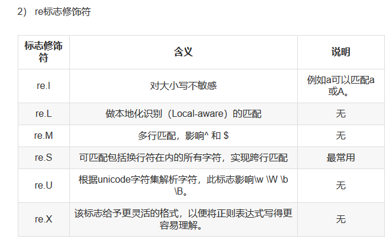

Contents
20.6. re模块的常用方法¶
参考文献
https://blog.csdn.net/zwq912318834/article/details/78083673
20.6.1. re.match()¶
##从字符串的第一个开始匹配
re.match(pattern, string, flags=0)
1.pattern 为匹配的正则表达式
2.string 为要匹配的字符串
3.flags为标志位，用于控制正则表达式的匹配方式，是否区分大小写，多行匹配等
20.6.2. re.serch()函数¶
##搜索整个字符串
re.search(pattern, string, flags=0)
1.pattern 为匹配的正则表达式
2.string 为要匹配的字符串
3.flags为标志位，用于控制正则表达式的匹配方式，是否区分大小写，多行匹配等
举例
import re
a = "one1tow2three3"
infos = re.search("\d+",a)
print(infos.group())
20.6.3. re.sub()¶
re.sub(pattern, repl, string, count=0, flags=0)
1.pattern 为匹配的正则表达式
2.repl为替换的字符串
3.string要被查找替换的原始字符串
4.count为模式匹配后替换的最大次数，默认0表示替换所有的匹配
5.flags为标志位，用于控制正则表达式的匹配方式，是否区分大小写，多行匹配等
举例
import re
phone = '123-4567-1234'
new_phone = re.sub("\D", "", phone) #将非数字-替换为空
print(new_phone)
20.6.4. re.findall()¶
#匹配所有符合的内容，并以列表的形式返回
re.findall(pattern, string, flags=0)
举例
a = "one1tow2three3"
infos = re.findall("\d+",a)
print(infos)
20.6.5. re模块装饰符¶
re.I #使匹配大小写不敏感
re.L #做本地化识别匹配
re.M #多行匹配，影响^和$
re.S #匹配包括换行在内的所有字符
re.U #根据Unicode字符集解析字符，这个标志影响\w，\W，\b,\B.
re.X #给与更灵活的格式
